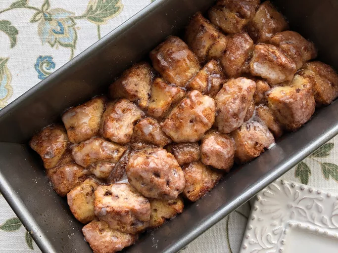

Cinnamon Roll Monkey Bread

Description
A cinnamon roll is a sweet baked dough filled with a cinnamon-sugar filling. Made with a rich dough leavened with yeast, their characteristic form is due to rolling a dough sheet containing sweetened cinnamon filling. Common toppings for cinnamon rolls include cream cheese frosting or a sugar glaze.
Ingredients
- 1/2 cup white sugar
- 1 teaspoon ground cinnamon
- 1 (12.4 ounce) package refrigerated cinnamon roll dough with icing
- 1/4 cup unsalted butter, melted
Steps
- Preheat the oven to 400 degrees F (200 degrees C). Grease a 9x5-inch loaf pan.
- Mix sugar and cinnamon together in a bowl.
- Set icing packet aside. Cut cinnamon rolls into quarters. Dip pieces in melted butter, coat in cinnamon-sugar, and place in the prepared pan.
- Bake in the preheated oven until dough has risen and top is golden brown, 20 to 25 minutes; drizzle icing over top and let cool in the pan for 5 minutes. Turn the monkey bread out onto a plate and serve warm.